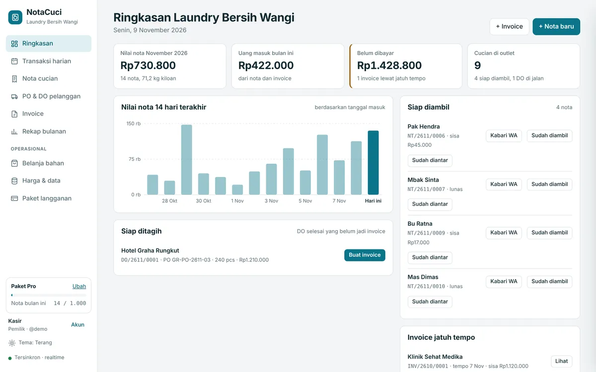
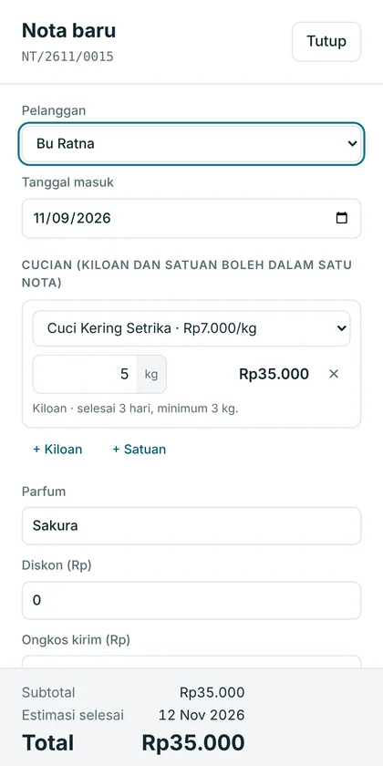

NotaCuci
Dashboard nota, invoice, dan rekap untuk usaha laundry.
MasalahNota ditulis tangan, invoice pelanggan langganan dibuat manual, dan rekap bulanan makan waktu.
SolusiSemua transaksi masuk satu dashboard. Invoice dan rekap bulanan keluar sendiri.
- Nota kiloan dan satuan, langsung jadi invoice
- Alur PO, DO, sampai invoice untuk pelanggan korporat
- Unduh PDF dan rekap bulanan ke Excel
- Kirim nota ke pelanggan lewat WhatsApp
Web appPDFExcelWhatsAppVPS

